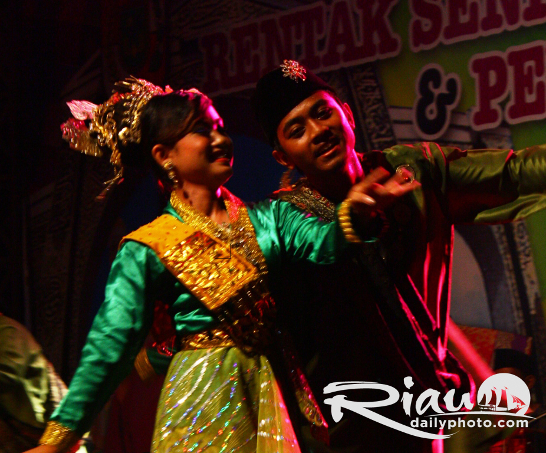

Bengkalis memiliki sejarah panjang dan kaya. Pulau ini pertama kali dihuni oleh suku Melayu pada abad ke-13. Pada abad ke-16, Bengkalis menjadi bagian dari Kesultanan Malaka. Setelah jatuhnya Malaka ke tangan Portugis pada tahun 1511, Bengkalis menjadi pusat perdagangan penting di Selat Malaka. Pada abad ke-19, Bengkalis menjadi bagian dari Hindia Belanda. Setelah kemerdekaan Indonesia pada tahun 1945, Bengkalis menjadi bagian dari Provinsi Riau.
Budaya dan Masyarakat
Bengkalis memiliki budaya yang unik dan beragam. Masyarakat Bengkalis dikenal ramah dan terbuka. Tradisi dan seni lokal Bengkalis sangat kaya, termasuk tari zapin, musik Melayu, dan kerajinan tangan seperti songket dan tenun.
Makanan khas Bengkalis juga terkenal lezat, seperti gulai ikan patin, asam pedas, dan nasi lemak.
Tari Tradisional

Tari Zapin: Gerakan Anggun yang Memukau
Tari Zapin, dengan gerakannya yang anggun dan ritmis, merupakan salah satu bentuk seni yang paling populer di Bengkalis. Tarian ini, yang berasal dari Timur Tengah, telah berakar kuat dalam budaya Melayu dan menjadi simbol identitas budaya Bengkalis. Tari Zapin biasanya diiringi oleh musik tradisional Melayu yang dimainkan dengan alat musik seperti gambus, gendang, dan biola.
Tari Zapin: Gerakan Anggun yang Memukau
Tari Zapin, dengan gerakannya yang anggun dan ritmis, merupakan salah satu bentuk seni yang paling populer di Bengkalis. Tarian ini, yang berasal dari Timur Tengah, telah berakar kuat dalam budaya Melayu dan menjadi simbol identitas budaya Bengkalis. Tari Zapin biasanya diiringi oleh musik tradisional Melayu yang dimainkan dengan alat musik seperti gambus, gendang, dan biola.